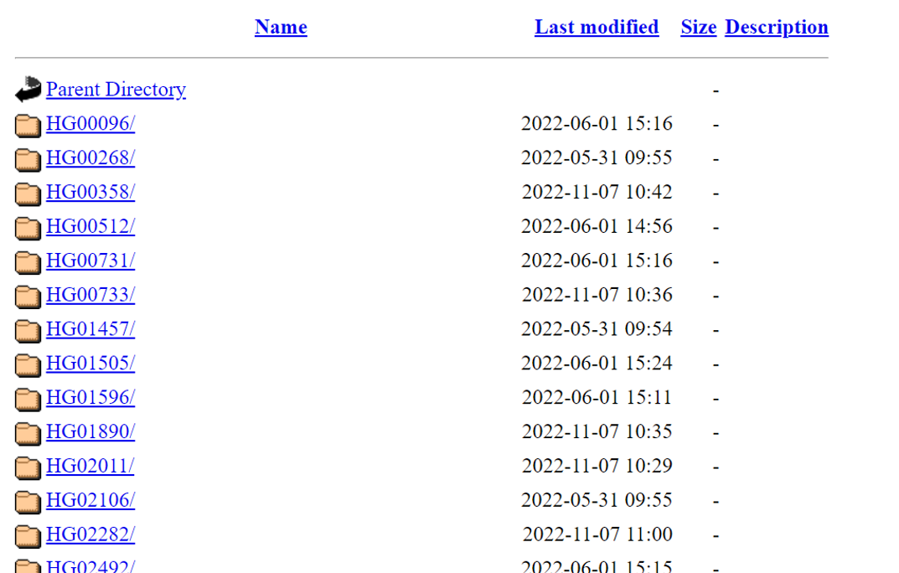
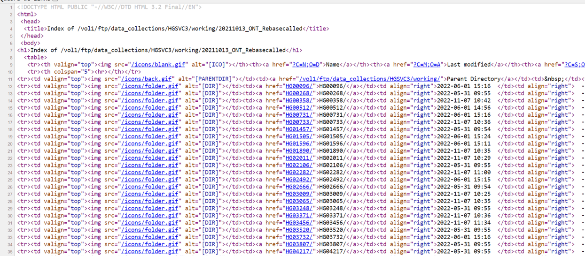

Using Rvest and Tidyverse to scrape the samples names from 1000 genomes
R
Bioinformatics
Webscrapping
Author
Marcel Ferreira
Published
June 22, 2023
Currently in my postdoc project I am downloading sequencing files using Oxford Nanopore Technologies (ONT) from the 1000 genomes database (https://www.internationalgenome.org/). But after I started the downloads I noticed that the name of the downloaded file did not contain any sample code.

Files from 1000 genomes
So at first I despaired and figured that I would have to manually collect information from almost 40 samples (in this step) and several more in future steps. A process highly susceptible to human error (not to mention laziness, right?).
Taking all this into account I thought “why not use R and try to scrape this information straight from the website?”. And the result was pretty cool! I hope it helps you in similar projects!

Files webpage structure
Libraries
In this work I used the {rvest}(Wickham 2022a) library to scrape the data and, of course, {tidyverse}(Wickham et al. 2019) to handle the data.
library(tidyverse)
-- Attaching core tidyverse packages ------------------------ tidyverse 2.0.0 --
v dplyr 1.1.0 v readr 2.1.4
v forcats 1.0.0 v stringr 1.5.0
v ggplot2 3.4.1 v tibble 3.1.8
v lubridate 1.9.2 v tidyr 1.3.0
v purrr 1.0.1
-- Conflicts ------------------------------------------ tidyverse_conflicts() --
x dplyr::filter() masks stats::filter()
x dplyr::lag() masks stats::lag()
i Use the conflicted package (<http://conflicted.r-lib.org/>) to force all conflicts to become errors
library(rvest)
Attaching package: 'rvest'
The following object is masked from 'package:readr':
guess_encoding
The FTP site for data download
The site for downloading the data in my project was as follows:
The tbls object is a R list, then it is necessary to extract the first element of the list to follow the analysis. The function html_table() return a tibble object containing the sample table.
tbls[[1]] %>%html_table()
# A tibble: 47 x 5
`` Name `Last modified` Size Description
<lgl> <chr> <chr> <chr> <lgl>
1 NA "" "" "" NA
2 NA "Parent Directory" "" "-" NA
3 NA "HG00096/" "2023-07-24 15:42" "-" NA
4 NA "HG00268/" "2022-05-31 09:55" "-" NA
5 NA "HG00358/" "2022-11-07 10:42" "-" NA
6 NA "HG00512/" "2022-06-01 14:56" "-" NA
7 NA "HG00731/" "2022-06-01 15:16" "-" NA
8 NA "HG00733/" "2022-11-07 10:36" "-" NA
9 NA "HG01457/" "2022-05-31 09:54" "-" NA
10 NA "HG01505/" "2022-06-01 15:24" "-" NA
# ... with 37 more rows
The table contains unwanted columns and rows, so I used the following strategy to clean up this data:
The select() function from the {dplyr}(Wickham et al. 2023) package was used to remove the first column, which had only empty cells. The filter() function from {dplyr} combined with the str_detect() from {stringr}(Wickham 2022b) package was used to filter the lines with the sample names using the pattern “NA” or “HG”. Finally, I used the Name column to create Name_sample columns, containing the sample code, and Name_dir, which contained the sample directory path (thinking about the next step). The final object was save to the samples_names.
With this step complete, I set about extracting the names of the different files in each sample folder. I used the famous group_by() > nest() > mutate() > map() pipeline to speed up the process. Applying the group_by(), from dplyr, in the Name_sample column and then the nest(), from {tidyr}(Wickham, Vaughan, and Girlich 2023), we produce a nested tibble, that means, a table with a list-column! And the map() function, from the {purrr}(Wickham and Henry 2023), its used to apply functions to all elements in a list. So, this can easily be used inside a mutate(), from {dplyr}, and create a new list-column, with the final results. And at the end, we use unnest(), from {tidyr}, to transform the list-column to the traditional table format.
So to accomplish this I just needed to write a custom function to be applied on each element and extract the sample files. Again, I used the functions read_html(), html_nodes() and html_table() to extract the tables with the filenames. The glue() function, from {glue}(Hester and Bryan 2022) package, was used to create the access links automatically.The I clean the table with a similar strategy then before, but now I use the pattern “guppy” to filter the rows of interest. I named this function fn_get_filnames() and apply in the pipeline.
Wickham, Hadley, Mara Averick, Jennifer Bryan, Winston Chang, Lucy D’Agostino McGowan, Romain François, Garrett Grolemund, et al. 2019. “Welcome to the Tidyverse” 4: 1686. https://doi.org/10.21105/joss.01686.
Wickham, Hadley, Romain François, Lionel Henry, Kirill Müller, and Davis Vaughan. 2023. “Dplyr: A Grammar of Data Manipulation.”https://CRAN.R-project.org/package=dplyr.